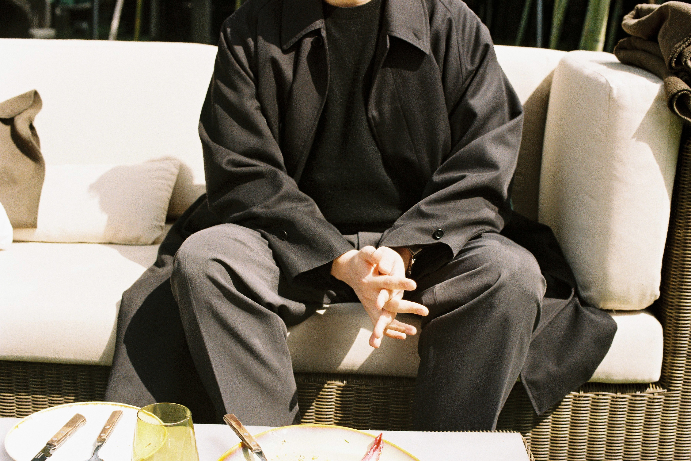
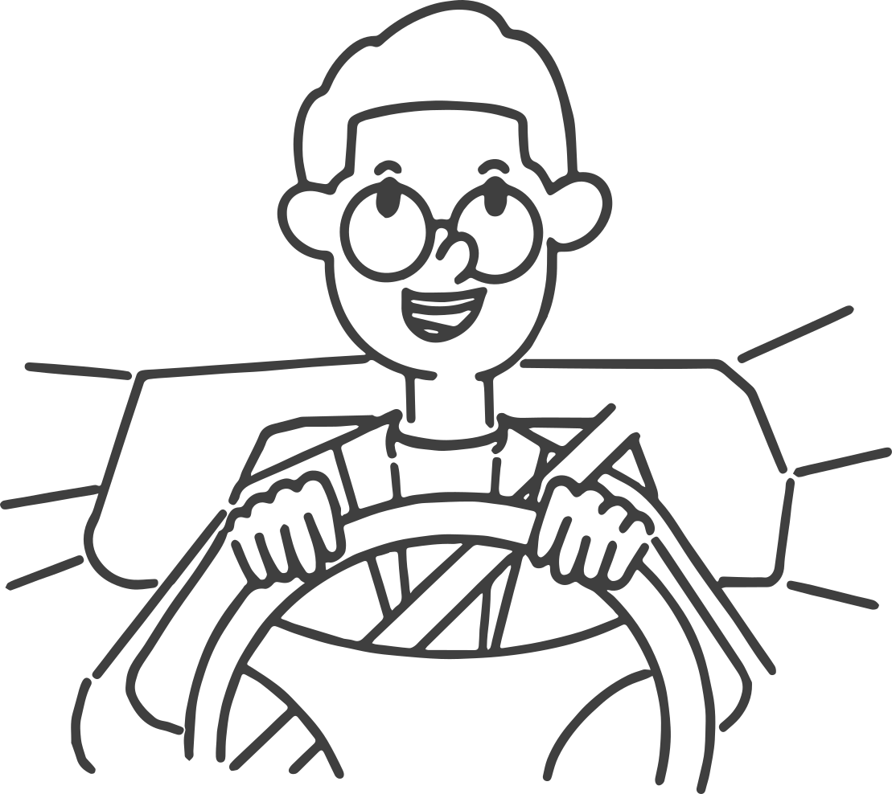

G-ARCH PROJECT

오늘은 이 질문으로 시작해보려고 해요. 인터뷰 요청을 드렸을때, 여배우 인터뷰 느낌으로 하고 싶다고 하셨어요. 그래서 지금 오전 11시에 만나서 브런치를 먹으면서 진행하고 있는데, 프리실라님에게 여배우란 무엇인가요?
정확히 말하자면 약간 30대 중반의 여배우 느낌을 생각을 했고 약간 김옥빈 씨나 약간 그런 어느 정도 커리어를 쌓은 그런 안정된 그런 느낌을 원했어요. 사실 그래서 여배우 자체가 중요한 건 아니었고 그냥 뭔가 30대 그냥 또래로서 얘기하는 30대들의 이야기 약간 이런 느낌으로 하고 싶었어요.
저도 정확하게 여배우가 뭔지 모르겠지만, 형이 평소에 말하는 화법이나 애티튜드 같은거가 참 여유있고 뭔가가 기품이 있는 형이었어서 그런게 여배우인가? 하는 생각을 하기도 했어요.
그럼 여배우의 애티튜드를 갖고 있는 프리실라님. 자기소개 부탁드려요.
만 35세인 남성입니다. 프리실라라고 해요. 부동산 컨설팅을 하고 있습니다.
저보다 지아키에 먼저 나온 몇명 안되는 사람중에 한명으로 알고 있어요. 언제 처음 나오셨죠?
지아키 처음에 만든다고 했을 때 그때 처음에 들어갔어. 그게 몇 년 정도인지는 지금 잘 기억은 잘 안나고.
아마 2017년도일 거예요.
맞아, 그때 이제 회장님인 택님이 건축모임을 해보고 싶은데, 어떤 식으로 할지 고민이 된다, 이런 얘기를 했었어. 나는 완전 건축은 아니고 도시계획 전공이었기 때문에, 나도 껴도 되나? 약간 이런 고민을 했었지. 그런데 건축이랑 도시 설계, 도시 계획 이런 쪽도 같이 해서 가면 좋을 것 같다고 의견을 줘서, 처음에 시작을 함께 하게 됐지.
그러면 처음에 만들어지기 전에 택님이랑 얘기를 했던 거네요. 원래 알고 있던 사이셨어요?
친구의 친구였어.
그렇군요. 그럼 첫 모임 때는 사람이 얼마나 왔었나요? 제가 두 번째 모임부터 참석을 했어서, 첫 모임에 대한 그 이상한 긴장감, 떨림 그런게 궁금해요.
아마 내 기억으로는 한 10명 남짓 정도 나왔던 것 같아. 약간 다들 의심의 눈초리를 하면서 이 모임이 진짜인가? 이 모임이 무슨 모임인가? 그런 눈치를 숨기지 못하고 이렇게 나왔는데, 결과적으론 재밌게 놀고 갔던 기억이 나. 그때 종로에서 만났었거든.
주변에 건축모임을 한다고 하면, 뭘 한다는거지? 이 모임이 왜 있을까? 그런 얘기를 몇 번 듣기도 했었어요. 운동 모임같은 것 처럼 만나서 ‘무언가’를 하는 모임들도 있으니까요.
맞아. 그런 고민이 초창기부터 있었어. 그때 이제 처음에 출발은 가볍게 했으면 좋겠다라고 이제 회장님이 얘기를 해서 그냥 건축이나 비슷한 전공인 사람들끼리 그냥 얘기하는 자리, 이런 식으로 좀 가볍게 시작을 했었어.
창단 멤버라고 하니까 어째 좀 대단해 보이기도 해요. 그러면, 지아키 말고 게이 커뮤니티에 나온 건 언제쯤에 어떤 계기로 나왔나요.
내가 커뮤니티라고 할 만한 어디 다른 데에 소속돼 있는 건 없어. 사실 엄청난 은둔이었는데 전전 애인이 강제로 아웃팅 해서 다른 게이들과 알게 됐고…
네? 아웃팅이요?
갑자기 술 먹으러 가자라고 해서 갔더니, 거기가 종로3가에 지금은 없어진 ‘번지 없는 주막’이었어.
아 ‘번지 없는 주막’이라는 곳이 있었군요.
6번 출구 바로 앞에 있었던 유명한 술집이 있었어. 거기에 이제 나를 데려가면서 그렇게 됐는데, 가보니까 생전 처음 보는 나와 비슷한 성향을 가진 분이 한 14명이 있었어요. 그래서 그때 약간 숨이 멎을 것 같았지만, 그렇게 강제로 시작을 해서 이제 그분들이랑 그분들의 친구, 친구의 친구 이런식으로 해서 이쪽 친구들이 생기게 됐죠.
그게 언제예요?
언제일까… 12년, 2012년 그때 내가 대학원 다니고 있을 때니까.
거의 10년 전이네요. 아, 저도 비슷한 시기에 처음에 종로를 나왔던 거 같아요, 12년도쯤에.
그때 처음 가본 데가 어디였어?
마구마구 돌다가 들어갔었는데, 어딘지 기억이 잘 안나네요. 쌍판댁이었나, 알타리었나, 그랬던 거 같아요. 그런 기억이 어렴풋이 나네요.
그러고보면 나는 전전 애인이 오픈리 게이여서, 그 영향을 제일 많이 받았던 거 같아.
한국인이 아니었었죠? 전전애인이.
응, 외국인이었어. 근데 좀 억울한 게 외국인은 한국에서 오픈 하든 말든, 그래도 리스크가 적다고 생각을 하거든.
완전 적다고 생각해요.
근데 지금 생각해 보면 그 친구가 나에 대한 배려는 크게 없었던 것 같아. 그래도 감사하게 생각하는 건 그렇게 해서 알게 된 사람들도 많고 내가 몰랐던 그런 세계가 또 새로 열리는 그런 경험을 했기 때문에 그런 거는 되게 좋았던 것 같아.
종로에 나온다는 게 쉽기도 하지만, 되게 어려운 일이기도 하니까요. 아까 아웃팅을 당했다고 했는데 그게 무슨 일이에요. 좀 더 자세히 말해줘요.
나는 사실 나랑 같은 성향을 가진 사람들하고 만날 거라고 예상을 전혀 못하고 있었고 그게 언제가 될 거라고도 전혀 생각을 안 하고 있었는데 그냥 그런 무리에 그냥 나를 이렇게 데려갔으니까 자동적으로 이제 그렇죠 오픈이 돼버린 거잖아 그게 처음에는 너무 놀랐는데 근데 막상 만나보니까 뭐 별거 별거 아니네 오히려 너무 재밌는 사람들이어서 첫 인상이 너무 좋았어.
그때까지는 딱히 나가보고 싶다. 그런 마음도 없었던 거네요.
너무 무서워하던 시기였어.
진짜 은둔이었나봐요. 그럼 그 전에는 만난 적도 없고.
만나기는 했지.
아, 은둔 아니네요.
수도 없이 만났는데.
만났지만.
근데 그 당시에는 사귀는 거는 내가 생각을 못했어. 그냥 만남 정도만 생각을 하고 사귀는 거는 가능할 거라고 난 생각을 안 했는데 이제 그 전전 애인이랑 처음으로 사귀게 된 건데 그래서 그때 이제 뭔가 새로운 게 많았던 거지.
지금 좀 궁금한 점이 생겼어요. 전전 애인이 10년전이면, 연애를 길게 길게 한 편인가요? 아니면 중간에쉬는 시기가 많았던 건가요?
6년 반 만났어.
와, 오래 만났네요.
거의 내 20대 절반과 30대 초까지 만난거지.
그러네요, 지금도 연애하고 있죠? 지금 애인은 얼마나 됐나요?
지금 1년 조금 넘었고, 한 살 어린 친구랑 만나고 있어.
연애 기간은 되게 긴데 횟수는 되게 적네요.
맞아. 지금 세 번
부러워요. 긴 연애를 하게 되는 비법은 뭐가 있나요?
참아야지. 뭐 그냥 나는 나를 잘 알아주는, 나를 잘 이해하는 사람이 있는 게 편한 것 같아. 그래서 좀 오래 만나다 보면 이제 서로를 잘 아니까 거기에 익숙해지는 게 나는 조금 안정됐다고 느껴서 그래서 조금 연애를 길게 하고 싶어하는.
그럼 연애를 결정하기까지 좀 오래 걸리는 편인가요?
엄청 오래걸려. 지금 연애는 진짜 한 세 달 정도 고민을 했는데, 지금 애인이 엄청 엄청 보챘어. 내가 여행 가서 고백을 했는데, 얘는 그 전까지 이별 여행으로 생각하고 있었대. 그래서 그 정도로 나는 신중한 편인 것 같아.
여행을 가기까지도 사귀지 않았던 거네요.
충분히 좋아하는 마음은 다 표현을 많이 했어. 근데 사귄다는 거는 나한테는 좀 큰 의미야. 내 인생에 개입이 되는 거라고 생각을 해서.
꽤 무게가 있네요.
좀 약간 무게를 두는 편이지. 근데 뭐 항상 무게를 두고 싶어 하는 건 아닌 것 같아.
무슨 말이에요. 무슨 말이죠?
연애를 안 하고 싶을 때가 있죠. 그럴 땐 또 가볍게 만나기도 하고. 그냥 이럴 때가 저럴 때가 있고 그런거지. 내가 예전에는 강동구에 살았는데 강동에는 이제 더 이상 만날 수 있는 남성은 없는 것 같아.
이거 저도 공감하는 게, 지금 집에 4년을 살았거든요. 그러니까 너무 없는거에요. 그래서 깜빡하고 처음보는 얼굴인 줄 알고 연락했는데, 물음표가 와서, 응? 뭐지? 하는 순간 갑자기 아! 하는 순간이 있었어요.
저도 같은 경험이 수 없이 있답니다.
이게 헷갈려요. 만나다 보면 헷갈려. 사진이 또 미묘하게 달라서. 그리고 사실 사진으로 얼굴이 기억나지 않는 만남들도 많으니까.
그렇지 그렇지. 그런 것도 있고 또 항상 이제 어플에 떠 있는 사람들이 있으면 동네에서 어? 뭔가 어디서 봤는데? 그런데 어딘지는 정확히 모르겠고, 그런 사람들이 생기더라고.
그렇죠. 그럼 무겁게 만난 지금 애인이랑은 동거를 하시나요?
아니, 동거는 하지 않고, 차로 가면 한 15분 20분. 그래서 일주일에 한 두세 번 정도 보내는 사이. 근데 애인이 과거의 나보다 더 은둔이야.
그러면 보통 집에서 데이트를 하겠네요?
엄청. 일단 집에서 만나는 게 베이스고 밖에 나갈 때도 엄청 몸을 사리는 편이야. 어느 정도 은둔이냐면 내 친구들 만나는 것도 싫어해. 그러니까, 애인이 내 친구들과 만나고 싶지 않아해.
그냥 형만 보고 싶은가보네요.
근데 나는 내가 애인한테 보여주는 면도 있는데 친구들을 통해서 나를 보여주는 면도 있잖아. 그래서 조금 더 가까워지려면 그게 필요하다고 생각을 하는데, 그게 필요하지 않다고 하니까. 그게 서운해서 몇 번 몇 번 싸웠어.
지금은 괜찮은거죠?
제가 좀 얼빠여서… 그것도 그렇고 뭐 만족하고 있으니까 계속 만나고 있는 거겠지?
애인이 인터뷰를 볼 가능성이 있나요?
일단 얘기는 했어. 오늘 인터뷰 한다고, 근데 걔가 볼지 안 볼지는 모르겠어. 자꾸 물어보더라고요 어디까지 공개할 거냐 그러면서 이렇게 신상 밝혀지면 어떻게 하냐, 그래서 네 알바냐 너나 잘하라고 했죠.
지아키 초반에는 합정 등지에서 소모임도 하면서, 자주 봤던거 같은데, 요즘은 꽤 오랫동안 나오시질 않으셨잖아요. 주변에서도 오늘 프리실라 형 인터뷰 한다고 하니까, 왜 요즘 안나오는지 물어보라고 하기도 하고요. 무슨 일이 있었나요? 코로나 시기에 맞춰서 딱 잠적을 한 것 같은…
그렇게 됐네요. 맞아. 그게 되게 복합적인 이유였던 것 같아. 하나는 이제 아무래도 모임에 나오시는 분들이 이제 새로 가입하신 분들도 있고, 또 연령대가 조금 낮다보니까 모임에 나갔을 때 말이 잘 통할까, 하는 이런 걱정도 있고, 부담도 조금 있었어. 그리고 내가 요즘 사실 술을 많이 안 먹거든. 건강 때문에 조절을 하고 있어서 약간 그런 것 때문에 또 조금 머뭇거리게 되는 부분이 있었던 것 같아. 거기다가 또 사실 일 때문에 바빴던 것도 많기는 해. 내가 하는 일의 특성상 정해지지 않은 스케줄로 바빴다가 안 바빴다가 하는 경우가 많아서 맞추기도 힘들기도 했고.
지금 이거 변명 아니죠?
핑계가 너무 줄줄인데… 또 하나는 전 애인은 이 모임에 나가는 걸 상관 안했는데, 지금 애인은 이 모임에 나가는 걸 별로 탐탁치 않아하더라고.
지금 만난 지 1년밖에 안 되었다면서요. 2~3년 전에부터 안 나왔는데…
맞아요. 제 변명이 들통 나버렸네요.
그런데 어제 지아키 정모가 있었잖아요? 아까 말한 것처럼 새로 들어온 학생분들 같은 경우에는 나이 차가 나서 얘기가 잘 될까 이런 고민을 했다고 하셨는데, 이게 또 새로 온 학생분도 그런 얘기를 하시면서 머뭇거렸다고 하시더라고요. 지금 제가 보니까, 제가 딱 그 사이, 중간인 거 같아요. 그래서 제가 좀 잘해야겠다. 하는 반성같은 다짐을하게 되더라고요.
그래서 4월부터는 한 번이라도 나가려고 생각을 하고 있어. 지아키 규칙도 있고.
그렇죠, 그 규칙을 다들 잘 보셨을까 했는데, 어제 모임에서도 이 규칙이 있어서 늦기전에 나가야겠다, 해서 나왔다는 분들도 계시더라고요. 그래서 이번에 몇 회 이상 나와야한다는 규칙을 만들길 잘했다. 하는 생각이 들었어요.
술을 안먹게 되면서 새로운 취미같은 게 생겼을거 같아요. 이건 제가 한 2년전 쯤에 형네 집을 방문했을 때, 굉장히 깔끔한 집착광공같은 집을 보면서 더 궁금해졌어요. 이 사람의 취미는 무엇일까…
취미 생활은 딱 두 개인 것 같아. 하나는 운동이고 하나는 드라이브. 운동은 사실 원래 내 취미는 아니었어, 그런데 이제 30대 중반 정도 되면 다들 느끼겠지만 운동을 안 하면 진짜 너무 힘들다. 죽을 수도 있겠다. 이런 생각을 하게 되거든. 몸이 그렇게 느껴져서 어쩔 수 없이 운동을 시작을 했어. 그런데 뭔가 즉각적인 피드백이 있는, 몸이 더 가벼워지고 뭔가 조금 더 정화되는 그런 느낌이 좋아서 매일은 아니지만 운동을 하고 있지. 그런데 내가 PT를 한 3년정도 받았는데, 지금 애인이 이게 정말 3년동안 PT받은 몸이 맞냐고 구박을 해서, PT를 그만두고 다시 운동을 하고 있어요.
아 PT는 그만두셨군요.
동네에 새로 헬스장이 하나 생겨서 거기에 다니기 시작했는데, 피티는 좀 별로더라고. 그래도 그전에 배웠던 것들은 좀 있으니까 그걸로 일단은 조금 해보려고 하고 있어. 아침에 출근하기 전에 유산소 위주로 조금 운동하고, 또 헬스장에 골프연습장이 있어서 골프도 이제 조금씩 해보고 있고.
원래 골프는 쳤었어요?
골프는 아예 못 쳤다가 지금 골프 레슨을 시작한 지 한 2주 됐지.
아 2주… 헬스장도 최근에 옮기고 골프도 최근에 시작을 하고. 그렇군요. 저도 작년에 피티를 받았었는데 거의 처음으로 운동을 해본거거든요. 열심히 사는 거 같고, 너무 보람차고 좋았는데, 피티가 끝나고 나서 다시 그 전으로 돌아가는건 굉장히 빠르더라고요.
맞아요. 운동하는 것 자체는 정말 좋은 게 훨씬 많은 것 같아. 그거 계속 이어가는 게 너무 힘들어서 그렇지 하는 것 자체는 너무 좋은 것 같아요.
그래서 저도 이제 다시 해야하지 않을까, 하고 있어요. 그러면, 다른 취미인 드라이브는 어떤가요?
사실 운전을 본격적으로 한 지는 오래 되진 않았는데.
인터뷰 하려고 급하게 취미 만든건 아니죠?
아니야. 그런데 사실 지금 차도 없어… 그런데도 운전이 내 성격이나 내 스타일이랑 되게 잘 맞는 것 같더라고. 내가 스스로 뭔가 컨트롤 할 수 있고 뭔가 경험해보지 않은 공간으로 가볼 수 있고. 이거에 큰 매력을 느껴서 요즘 거의 주말마다 차 빌려서 서울 밖으로 나가곤 해.
그럼 면허도 최근에 따신거에요?
면허는 고3 졸업하고 바로 땄어. 엄청 오랫동안 장롱 면허였는데, 코로나 때 너무 집에만 있으니까 미쳐버리겠더라고. 그래서 2020년에 도로 연수를 받고 운전을 시작 했지. 내가 몰랐던 모습이 있었는데 내가 운전을 잘하고 있다가 다른 사람이 끼어들거나 하면 욕이 나오더라고. 되게 험하게 운전하는 편이더라고. 진짜.
상상도 안되요, 형이 험하게 욕하거나 운전하는거.
나는 평소에 욕을 거의 안 하거든
안 할 것 같아요.
근데 운전할 때는 되게 막 시발 시발 잘 거리더라고.
이제 일 얘기를 시작해볼게요. 부동산 개발 일을 하신다고 했는데, 구체적으로 어떤 일을 하고 계시는 건가요?
쉽게 얘기를 하자면 부동산이라고 할 수 있는 모든 건물, 땅. 이런 것들을 사고 파는 걸 자문을 해주기도 하고. 그런 거를 어떤 식으로 개발을 할지 어떤 식으로 리모델링을 할지 이런 것들 모든 것들 부동산에 관한 모든 것들에 대해서 자문해주는 역할을 한다고 보면 돼.
자문이라고 하면 이 부동산이 어느 정도 가치를 지니는지 지닐 수 있는지 그런 것들인가요?
조금 더 구체적으로 얘기를 하자면, 예를 들어서 내가 한 1만 평 땅이 있는데 이거를 어떻게 해야 될까요라고 하면 이제 이 건물은 아파트, 오피스, 호텔 이런 것들을 개발할 수 있습니다. 이거에 대한 시장은 이렇습니다. 이런 것들. 시장 환경들 보여주지. 그리고 이제 더 나가서 이제 아파트로 개발했을 때는 이런 이런 것들을 고려했을 때 몇 억의 가치가 있을 지,오피스는 얼마의 가치가 있고, 호텔은 얼마의 가치가 될 거니까 여기서 선택을 하시면 됩니다. 이렇게 하는거죠.
뭔가 영화나 드라마에서 비슷한 장면들을 본 거 같아요. 그리고 약간 물건 사고 파는 것 같네요? 물건이 좀 단위가 좀 크고 건물이고 좀 그렇긴 하지만.
맞아, 맞아.
그럼 지금 일을 하게 된 지 얼마나 된 거예요?
지금 이제 18년 말부터 일했지.
형을 처음 알았을 때는 딴 일을 하고 있었던 거로 기억해요. 지금 일 하기 전에는 어떤 일들을 해왔어요?
전공이 도시계획이고, 처음 일했던 게 설계사무소의 도시계획 부서에서 엔지니어링 일 쪽을 많이 했었던 것 같아. 지구단위계획 고치고, 공공 관련된 일 위주로 그렇게 했었고, 그러다가 이제 한때 도시재생 이런 것들이 트렌드였었지. 그래서 그거 관련된 일을 조금 해보려고 도시재생 관련 회사에서 한 1년 조금 넘게 일도 했었고.
처음에는 도시계획, 엔지니어링을 하다가, 그리고 도시 재생하다가 지금은 부동산 자문을 하고 있는데, 관련이 있는 거 같으면서도 좀 다른 종류의 일들로 변화가 있었던 거 같아요. 어떤 계기 같은게 있나요?
어떤 내 커리어를 생각했다기보다는 그냥 그때그때 맞춰서 가긴 했어. 그러니까 처음에 설계사무소에 들어간 거는 내 전공으로 병역 특례를 할 수 있는 데가 설계사무소에서 조금 뽑았었어. 그렇게 시작을 했는데, 나랑 좀 맞는 것 같고 내가 해온 거랑 크게 벗어나지 않는 것 같아서 그 분야에서 조금 더 있었어. 한 1년 정도 더 있었던 거 같아. 그렇게 있다가 잠깐 이제 일 쉬고 다시 일 구하고 있었는데, 같이 일했던 분이 도시재생회사를 차렸어. 그래서 거기서 잠깐만 있어봐야지 해서 들어갔는데 또 그냥 그 회사 괜찮았어. 재밌게 일할 수 있는 분위기여서 한 1년 정도 있었어. 그 다음 회사가 지금 회산데, 대학원 때 동기였던 형이 이 회사 다니고 있었거든. 그래서 도시계회 전공했던 사람들이 오기 괜찮은 회사다라는 거를 새롭게 알게 됐지. 그 전에는 아예 몰랐거든. 내가 이 회사에 갈 수 있는 있는지 없는지를 아예 몰랐는데, 그 형 통해서 알게 된거야. 그런데 또 있어보니까 잘 맞아. 내 커리어를 이렇게 가야지라고 했던 건 아닌데 그냥 내가 그 안에서 내 길을 만들 수도 있었고, 그런게 괜찮았던 거 같아.
그럼 지금 같은 일 하는 사람들이 전공이 다 약간 도시설계 쪽인가요?
되게 다양해. 건축도 있고 도시 계획도 있고 경제도 있고.
다른 전공인 사람들을 사회에서 만났을 때 오는 재밌음이 있잖아요. 새로움이 있고. 그럼 이 다음에는 어떻게 될거 같아요? 계획 하고 있는 게 있나요?
그게 요즘 가장 큰 고민인데 어쨌든 내가 지금까지 해온 것들을 생각을 하면 컨설팅 쪽에 있어야 될 것 같아. 그러니까 어떤 유형의 어떤 이름의 회사든 컨설팅은 할 것 같아.

이제 마지막 질문이에요. 노년 프리실라의 삶. 어떨꺼 같나요?
좀 쉽진 않은 것 같아. 내가 원하는 그림은 서울이랑 멀지 않은 곳에서, 꼭 서울은 아니더라도 대도시랑 가까운 곳에서 내 취향이 반영된 집을 꼭 짓고 싶어. 뭔가 한 번쯤은 살면서 한 번쯤은 실현을 해봐야 되지 않을까 그런 생각이 많이 들거든. 요즘 그거 알지. 50대 이상 분들이 공통적으로 제일 많이 보는 것 중에 하나가 건축탐구 집인 거. 우리 엄마도 엄청 애청자고, 나도 보면 되게 재밌더라고.
맞아요, 넷플릭스에도 있더라고요. 꽤 재밌었어요.
그래서 뭔가 집을 짓고 사는 사람일 것 같아요.
황토집 짓는 거 아니죠? 나는 자연인 아니죠?
돌 찌개 끓이고 벌집 쫓아 다니고. 우리 부모님도 황토 집 얘기하더라고, 약간 그게 로망이 있나 봐. 아무튼 황토집은 아니고, 그런 집 짓고 친구들 불러서 약간 요리해주고 맛있는 거 먹고, 그렇게 할 수 있는. 그런 삶이기만 하면 너무 좋을 것 같아.
그때쯤 되면 지금 애인도 형 친구들 만나겠죠.
관심 없어 지가 알아서 하겠지
인터뷰 진행 및 사진 : 정민 일러스트 : O